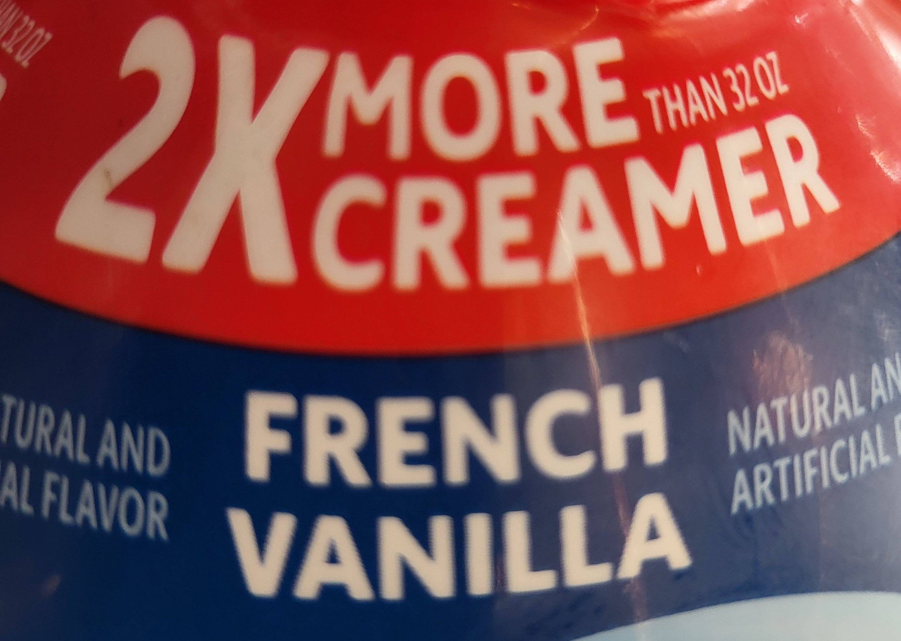

9. Making responsible decisions
Warm up
- You want to know how UMBC graduate students feel about their job prospects, and how this might differ between students in STEM programs and students in social science programs (you’re not interested in other degrees), so you’re tabling on campus with a survey. The only actual survey question is “Do you feel good about your job prospects after graduation?” Draw a flowchart of the questions you might ask people before you get to the one survey question.
- There’s a virus circulating that has killed many people, but a vaccine is available and you trust reports that it greatly decreases the chances of dying from the disease. After about a year of a massive vaccination campaign, you find out that the majority of people dying from the disease at the hospital near you were already vaccinated. Does this change your beliefs about the vaccine’s effectiveness? What other information might help explain this?
- health of people who are dying before getting sick (comorbidities, etc)
- how many people already vaccinated
Representing data
Some of the ways we’ve talked about data visualization being misleading are intentional and malicious. That definitely happens, and how often you run into it might depend on your sources of information (Fox News, boardroom presentations, Congress, social media influencers…) but more often it’s just lack of skill and fluency.

Who’s in the data
One of the easiest things to mess up is the universe of your data. This is basically your denominator—who or what is included and used as the unit of analysis. I’ve most often found (and made, and corrected) this type of mistake with survey data, because it can be hard to know exactly who’s being asked every question.
An easy way to catch this is to read the fine print on your data sources, and to do it routinely because it might change. Some examples:
- Birth outcomes: for some measures, unit might be babies; for others, parent giving birth
- ACS tables: several tables seem like they match, but one is by household and another is by person. Be especially mindful with tables related to children and family composition—these get messy. 1
- Proxies: when I analyzed data on police stops, I tried to figure out a population to compare to. I didn’t have data on how many people in each census tract had a driver’s license, decennial data wasn’t out yet so I didn’t have reliable local counts of population 16 and up by race, so I just used population. It wasn’t ideal.
- Relationships: is a question being asked of parents, or of adults with a child in their household? These aren’t necessarily the same.
1 This one is especially brain-melting: Ratio of Income to Poverty Level in the Past 12 Months by Nativity of Children Under 18 Years in Families and Subfamilies by Living Arrangements and Nativity of Parents. The universe is own children under 18 years in families and subfamilies for whom poverty status is determined.
Another example: how would you make sense of this?
| name | category | group | ever_unfairly_stopped | multiple_times_3yr |
|---|---|---|---|---|
| Connecticut | Total | Total | 15% | 29% |
| Connecticut | Race/Ethnicity | White | 12% | 16% |
| Connecticut | Race/Ethnicity | Black | 25% | 40% |
| Connecticut | Race/Ethnicity | Latino | 20% | 50% |
Obscuring data
We’ve talked some about dealing with missing data, and often the solution to data-related problems is to get more of it. But sometimes it’s important to not be counted, or to not show everything. There are even times when it might be good to intentionally mess up the data (maybe this isn’t the role of the visualizer, however). 2 I would argue that hiding data when necessary should also be part of doing data analysis and viz responsibly. Some examples:
2 The Census Bureau made the controversial decision to basically do this, via differential privacy. Wang (2021)
- Filling period tracking apps with fake data after Roe v Wade was overturned
- Not adding citizenship to the census or other surveys; not asking about sexual orientation and gender identity. In theory these should both be fine, but in practice they may not be safe for people to disclose, or they could get misused.
- Leaving out parts of your data that could be stigmatizing or lead to misinformation
An example of this last point:

My organization’s survey asked a similar set of questions, but we chose not to release the question about getting COVID from the vaccine. The others are valid concerns; that one is misinformation that we didn’t want to repeat even with qualifiers.
Lack of a pattern
Sometimes the pattern you expect to find in a dataset isn’t there, and that’s okay. You want to go into your work with an open mind, rather than force the data into the story you want it to tell. I’m really into situations where the pattern you think you’re going to find isn’t there, and that’s the story—it might point to a disruption in the usual pattern.
Say what you mean
- Don’t say “people of color” when you actually mean “Black people” or “Black and Latino people” or something else. This drives me crazy, and I’m sure I’ve done it as well. Sometimes because of small sample sizes or other limitations, you can’t break your data down further than white vs people of color. But if you can disaggregate further, do so, at least in the EDA process. This especially goes for data that deals with something that historically targeted e.g. Black people or indigenous people or some other group.
- Along those same lines, don’t say BIPOC (Black, Indigenous, and people of color) if you don’t actually have any data to show on indigenous people, or LGBT if you have no data on trans people.
Exercise
The youth_risks dataset in the justviz package has a set of questions from the DataHaven Community Wellbeing Survey, where survey respondents are asked to rate the likelihood of young people in their area experiencing different events (DataHaven (n.d.)). The allowed responses are “almost certain,” “very likely,” “a toss up,” “not very likely,” and “not at all likely”; this type of question is called a Likert scale. The universe of this dataset is adults in Connecticut, and the survey was conducted in 2021.
Starting with just stacked bars for a single question at a time (see example), explore the data visually and see if you can find an anomaly. (Hint: one of these questions is not like the other.) Browse through Pirrone (2020) to get some ideas of more ways to visualize Likert data, especially ways that will illustrate the pattern well.
div_pal <- c('#00748a', '#479886', '#adadad', '#d06b56', '#b83654') # based on carto-color Temps
risks <- youth_risks |>
filter(category %in% c("Total", "Race/Ethnicity", "Income", "With children")) |>
mutate(question = forcats::as_factor(question))
risks |>
filter(question == "Graduate from high school") |>
mutate(value = scales::label_percent(accuracy = 1)(value)) |>
tidyr::pivot_wider(id_cols = c(category, group), names_from = response) |>
knitr::kable(align = "llrrrrr")| category | group | Almost certain | Very likely | A toss up | Not very likely | Not at all likely |
|---|---|---|---|---|---|---|
| Total | Connecticut | 39% | 55% | 4% | 0% | 1% |
| Race/Ethnicity | White | 39% | 56% | 4% | 0% | 1% |
| Race/Ethnicity | Black | 36% | 55% | 3% | 1% | 4% |
| Race/Ethnicity | Latino | 44% | 44% | 11% | 0% | 0% |
| Income | <$30K | 28% | 61% | 7% | 1% | 2% |
| Income | $30K-$100K | 38% | 55% | 6% | 1% | 1% |
| Income | $100K+ | 44% | 55% | 1% | 0% | 0% |
| With children | No kids | 36% | 57% | 5% | 1% | 1% |
| With children | Kids in home | 45% | 51% | 4% | 0% | 0% |